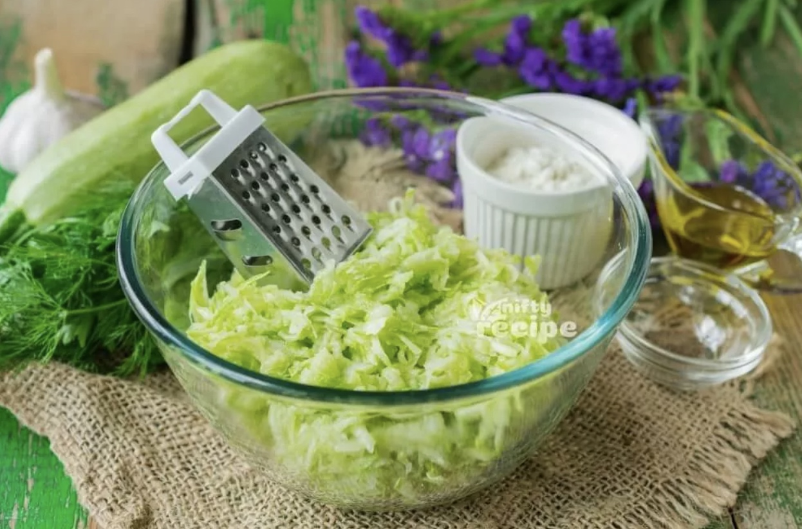

Double Chocolate Cookies
Origin: American
Source: Family Recipe
Category: Dessert

My daughter learned to make these cookies at a baking camp at Zingermanns and has tweaked the recipe to fit the taste buds of her siblings. They are extremely sugary so the salt helps to balance it. Note, these cookies are best eaten very quickly.
Ingredients
- 1 cup butter, softened
- 1 cup packed brown sugar
- 1/2 cup white sugar
- 1 egg
- 2 teaspoons vanilla extract
- 2 cups all-purpose flour
- 2/3 cup unsweetened cocoa powder
- 3/4 teaspoon baking soda
- 1/4 teaspoon salt
- 2 cups semisweet chocolate chips


Instructions
- In a mixing bowl cream together the butter, granulated sugar, and brown sugar
- Add the egg and vanilla extract and beat well
- Add the melted chocolate
- In a separate bowl combine the flour, baking soda, cocoa powder and salt.
- Combine the wet and dry ingredients.
- Add the unmelted chocolate chunks.
- Form 15 cookies and place on a baking sheet.
- Cook for 12 to 13 minutes at 350 degrees.
Colleen van Lent © 2023
Chocolate Chip Banana Bread
Origin: American
Source: Delish
Category: Dessert
This is a tried-and-tested recipe that I have used numerous times for making the perfect chocolate chip banana bread! Not only does it help utilize the bananas that have slowly overripened at the back of the fridge, it ends up creating an incredibly delicious, and relatively healthy, dessert.
Ingredients
- cooking spray
- 1 1/2 c. all-purpose flour
- 1 tsp. baking soda
- 1/2 tsp. kosher salt
- 3 large ripe bananas, mashed
- 1/2 c. packed brown sugar
- 1/2 c. (1 stick) melted butter
- 1/4 c. granulated sugar
- 1 large egg
- 1 tsp. pure vanilla extract
- 1 c. semisweet chocolate chips
- (optional) 1/2 c. chopped walnuts

Instructions
- Preheat oven to 350°. Grease a 9”x-5” loaf pan with cooking spray.
- In a large bowl, whisk together flour, baking soda, and salt.
- In a separate large bowl, combine bananas, sugars, butter, egg, and vanilla. Add dry ingredients to wet ingredients and stir until just combined. Fold in chocolate chips and walnuts, if using.
- Pour batter into prepared pan and bake until a toothpick inserted into the center comes out clean
- Fold in walnuts (optional) and chocolate chips and transfer to prepared pan.
- Bake until a toothpick inserted into the center of the bread comes out clean, 1 hour to 1 hour 10 minutes.
- Let cool 10 minutes before inverting onto a cooling rack


Ibrahim Moazzam & Memuna Tariq © 2023
Zucchini Fritters
Origin: Turkey
Source: Nifty Recipe
Category: Appetizer

I found this recipe for zucchini fritters on a food blog when I was looking for quick and easy dishes to make. It uses minimal ingredients and can be done in less than half an hour. They’re delicious, filling, and go great with dipping sauces.
Ingredients
- 2 lb zucchini
- 2 eggs
- 1/2 cup flour
- frying oil
- salt
Instructions
- Combine eggs, salt, and pepper and whisk.
- Grate the zucchini and squeeze the moisture out of it. 
- Add zucchini and flour and mix.
- Heat oil in pan and add dollops of batter to fry for a few minutes on each side.
- Eat hot with your dipping sauce of choice.


Kay Malan © 2023